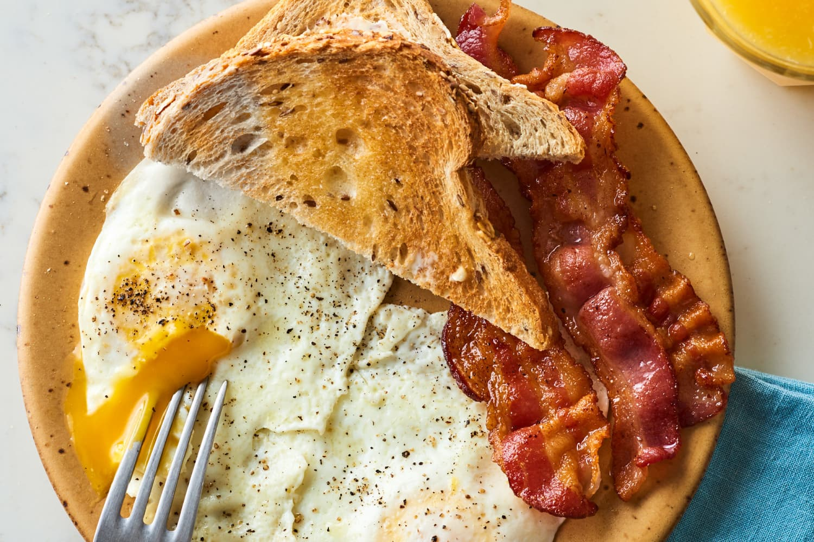

Breakfast Recipe

Description
The best breakfast for starting the day off right
Ingredients
- 6 Eggs
- 4 Bacon strips
- 2 Tbsp olive oil
- 2 Tbsp kethcup
- 2 Slices of sourdough bread
Recipe
- Add 2 Tbsp of olive oil to frying pan. Heat on medium high heat for 2 minutes
- Cut bacon strips in half and add to frying pan. Cook for 4-6 minutes or until crispy. Remove from pan leaving oil in.
- Add eggs to frying pan. Cook for 4-6 minutes or until white is solid. Flip each and cook for 30 seconds. Remove from pan.
- Add ketchup to plate and enjoy with bread.